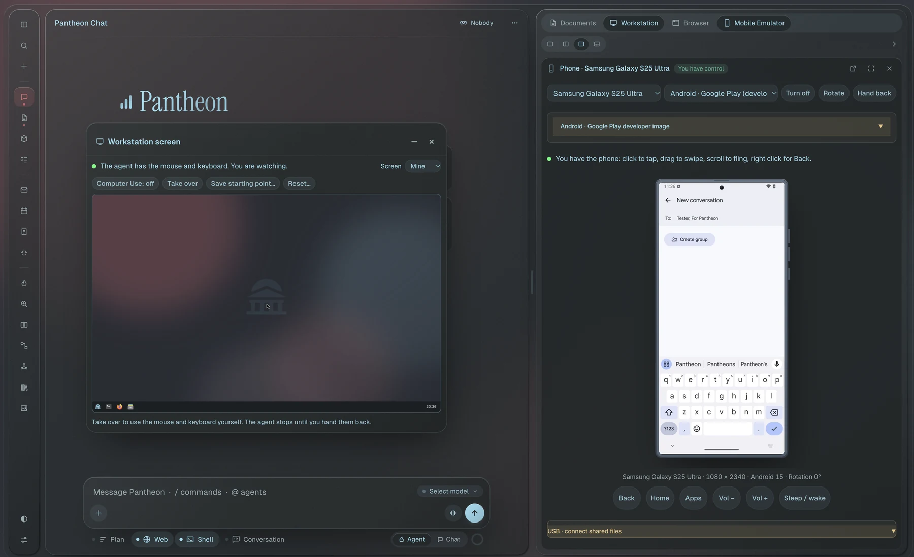
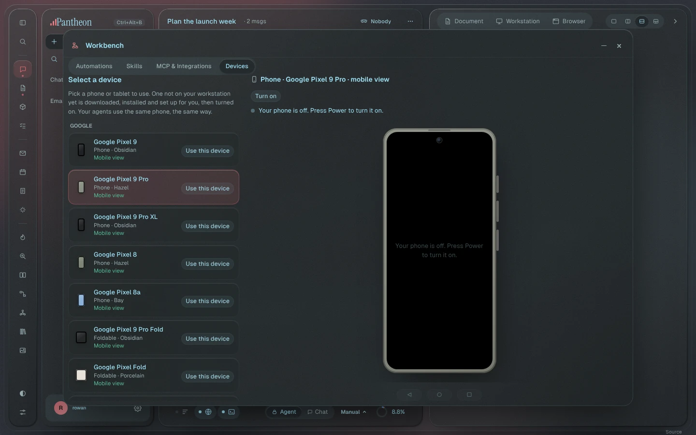
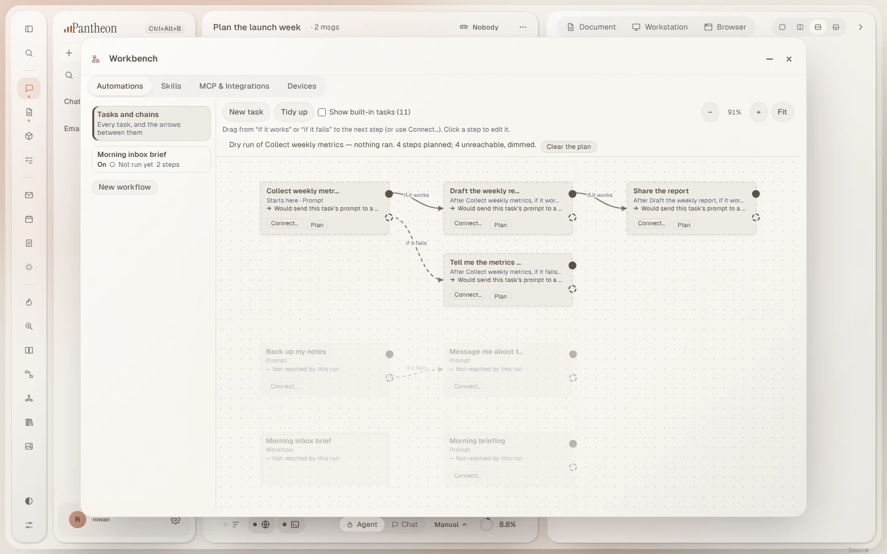
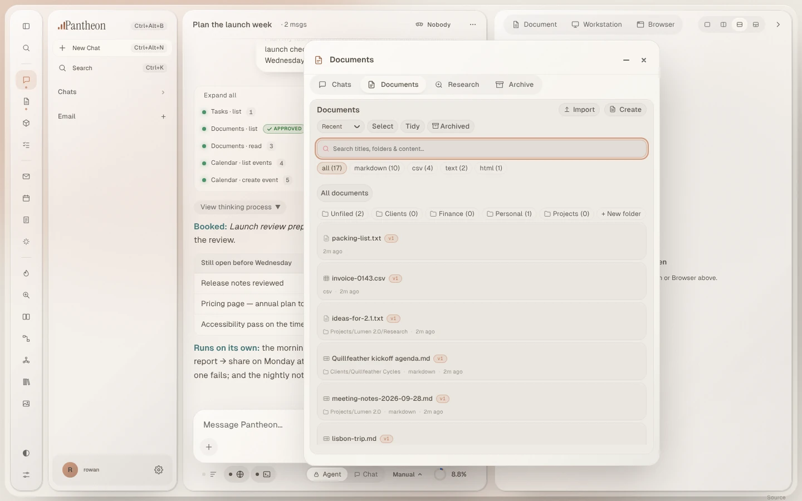

New: meet Apollo, your own partner inside Pantheon
Pantheon
The AI workspace you host yourself, where your agent gets its own computer. And its own phone.
Pantheon runs on your hardware and works with the models you already use, local or hosted. Your agent gets a Linux desktop and an Android phone to work on, right beside the chat. You can watch it work, take over, and hand it back. It's free and open source, and it doesn't phone home.
AGPL-3.0. Tested on Linux, Windows and macOS, and on Proxmox in Debian LXC containers running Docker.

Meet Apollo
One chat that runs the rest of Pantheon
A partner you talk to, and a team of agents behind it.
Apollo is one standing conversation that's yours. Tell it what you need, by text or by voice. It turns that into a task, gives it to a lead agent from a roster of 259, keeps track of everything in flight, and comes back with one line when it's done or when there's a decision only you can make.
It remembers what you've settled and what's still open, and it only interrupts when something needs you. When a plan has a hole, it says so. All of it runs on your server, with the models you pick, and what it knows about you stays in Pantheon. Change models next month and Apollo still knows you.
You say it. "Get the cert renewals sorted before the 30th."
Apollo makes it a task with a state, a next step and a budget.
A lead agent takes it and works it with the team: delegating, asking and sending work for review.
You hear one line. Done, or the one question it's stuck on. Answer it and the work carries on.
- Everything in one pane
- What's working, what needs you, the agent's desktop and phone, and every task's own chat with its lead.
- Memory you can read
- Every line it knows, with where it came from. Confirm, edit or forget in one tap. A guess stays a guess until you confirm it.
- Spaces
- Keep work and life apart. Airgap a space and nothing goes in or out, and you can pin it to local models only.
- Briefings
- A morning brief, and check-ins that only speak when something changed.
- Trust it earns
- Approve the same kind of action five times in a row and Apollo offers to just handle it from then on. You decide.
- No surprise bills
- Budgets per task on paid API models, under a cap your admin sets. Local models run uncapped.
The phone
Android 15 in Google's own emulator
When a job needs a phone, Pantheon boots one.
It's Google's Android Emulator running Android 15, sped up by your machine's own hypervisor. Pick a phone, a foldable or a tablet from 19 device profiles. If it isn't installed yet, Pantheon downloads it and sets it up, and the agent drives it the same way you do.


- Everyone gets their own
- Each person has their own phone, SDK home and ADB keys. Nobody shares a device.
- Shared with the agent
- The phone sits live next to the chat. Take it over whenever you like and hand it back.
- It taps what's there
- Every screenshot the agent sees comes with numbered marks read from Android's own UI tree, so it taps the real button instead of guessing at pixels.
- Files go both ways
- A USB-style shared folder connects your projects to the phone's Downloads.
| Host | Hypervisor | Status |
|---|---|---|
| macOS on Apple Silicon | Hypervisor.Framework | Tested on real hardware |
| Windows | WHPX | Tested on real hardware |
| Linux | KVM | Tested on a multi-node Proxmox cluster, in Debian LXC containers running Docker |
| No hypervisor | None | Falls back to a mobile browser view |
The desktop
A Linux machine the agent works on
For the work that only happens on a screen.
Most AI tools give a model a chat box and some API calls. Plenty of real work lives somewhere else: a settings page, a web app behind a login, a program that only exists on a phone. People get that done with a screen and a keyboard, and in Pantheon the agent does too.


- Live in the chat
- The desktop streams into Pantheon. Watch it work or take the keyboard.
- Its own browser
- A separate Firefox on its own screen, locked down by policy.
- Snapshots and Reset
- Save a starting point. If something breaks, roll back in one click.
- Per person
- Everyone has their own home folder, projects and network rules.
Features
What runs around the desktop and the phone
Everything else the agent needs to finish the job.
- The Brain
Pantheon remembers what you tell it: preferences, projects, people, facts. The part that matters is pulling up the right memory at the right moment, and it's very good at that. On our test set the right memory comes back first almost every time, and it's always in the top five. The search Pantheon replaced got it into the top five only four times out of ten.
It runs on a small embedding model that ships inside Pantheon, so nothing extra to install and nothing leaves the box. You can read every memory and see where it came from.
- Agents
- 259 agents in 18 teams. They hand work to each other, review it and report back, and each one comes with test cases that run through the real harness.
- Workbench
- Describe an automation in the chat and get a scheduled or event-driven workflow back, switched off until you've checked it. Branches, dry runs that touch nothing, and versions you can undo.
- Models
- LM Studio, Ollama, vLLM, llama.cpp or any OpenAI-compatible server, plus the big hosted providers by API key or subscription. Use a different model for each task if you want.
- Voice
- Talk to it like a phone call. Whisper listens, and Kokoro, Chatterbox or Piper answers, all on your own hardware.
- Tools and MCP
- Shell, files, skills and MCP servers, behind approval rules you set per person. The agent can write a new MCP server in its desktop and test it before an admin turns it on.
- The rest
- Research that reads its sources, a document editor with PDF and Word export, email triage with replies that wait for your OK, notes, tasks, a CalDAV calendar, and approvals on your lock screen.




Security
Made to run on a server
Your data stays on your hardware.
- No telemetry
- Pantheon makes no calls home. A check in CI fails the build if a fresh install reaches out to the internet on its own.
- Accounts
- Sign-in is always on, with two-factor. People and instances are kept apart, right down to their own phone.
- Approvals
- Sending, deleting and anything risky waits for a person. You can approve from your lock screen with Pantheon closed.
- Supply chain
- Third-party code is pinned, vendored and licence-checked in CI instead of pulled at runtime.
- The phone
- Secure ADB checked at boot, a pinned
scrcpy-serverhash, and TLS with a pinned certificate for a phone on another machine. - Deployment
- One Compose file, with NVIDIA and AMD GPU setups. The deployment guide covers hypervisor hosts, Swarm and a remote workstation.
About
Where Pantheon came from
Pantheon started because I was bored. I wanted to see how far multi-agent orchestration could go in DevOps if I put several frontier models on the same work and let them run. Pantheon is what came out of that, after more than $45,000 in compute across three providers.
It's built on Odysseus. I liked its shell, but underneath was a chatbot with a few half-built automations and a lot of finished code nobody had wired up. I connected what was there and then built what an agent actually needs to get work done: the desktop first, then the phone, then everything around them. What came out is a next-generation agent harness.
It's free, it's AGPL and it isn't for sale. It runs on your machine with the models you pick, and it answers to you and your team.
Whether you're one person on a single GPU or a billion-dollar firm, if it's useful, use it.
ImPanick, who builds Pantheon
Install
Docker, a VM, or native
Running in a few minutes.
The quickest way in. These commands work the same in PowerShell and in a Linux or macOS terminal.
Get the code.
$ git clone https://github.com/ImPanick/pantheon.git $ cd pantheonMake your settings file. It's commented and works as it is.
$ cp .env.example .envStart it.
$ docker compose up -d --buildOpen http://localhost:7000 and create the admin account.
For the phone, an admin accepts Google's Android SDK licence once. Nothing of Google's is downloaded before that: docker compose run --rm android-vm accept-license. The phone needs KVM, so Linux, or Docker Desktop on WSL 2.
For a homelab or a server: Pantheon in its own VM or LXC container, deployed as a stack from Portainer, Dockhand, Arcane or any manager that runs Compose.
Make the VM and pass virtualization through. The desktops and phones need the CPU's VT-x or AMD-V inside the guest. On Proxmox, set the VM's CPU type to host. On ESXi, tick Expose hardware assisted virtualization to the guest OS. For an LXC container, pass /dev/kvm into it. Without this the desktops fall back to slow emulation and there are no phones.
# qm set <vmid> --cpu hostInstall Docker and your stack manager in the guest.
Add a stack from Git. Repository https://github.com/ImPanick/pantheon, branch main, compose file docker-compose.yml. If your manager can't pull from Git, clone the repo into the guest and point it at that folder.
Let other machines reach it. Pantheon only listens on the guest itself by default. Add this variable to the stack. Any other setting from .env.example can go in the same way.
APP_BIND=0.0.0.0Deploy, then open http://<guest address>:7000 and create the admin account. Put it behind your reverse proxy for HTTPS.
For the phone, accept Google's SDK licence once from a shell in the guest, inside a clone of the repo, with the stack's name as the project name: docker compose -p <stack name> run --rm android-vm accept-license. The hypervisor guide covers ESXi, Proxmox and Hyper-V in full.
Native, no Docker needed.
Get the code in PowerShell.
PS> git clone https://github.com/ImPanick/pantheon.git PS> cd pantheonRun the launcher. It sets up a Python environment, installs what it needs, asks for the admin account and starts the server. It's safe to run again.
PS> .\launch-windows.ps1Open http://localhost:7000 and sign in.
If PowerShell won't run the script because of its execution policy, add -ExecutionPolicy Bypass for that one run: powershell -ExecutionPolicy Bypass -File .\launch-windows.ps1. Pantheon listens on 127.0.0.1 by default, so only your machine can reach it until you change that.
Native on Apple Silicon, so your Mac's GPU serves the models.
Get the code.
$ git clone https://github.com/ImPanick/pantheon.git $ cd pantheonRun the quick start. It installs what Pantheon needs through Homebrew and launches it.
$ ./start-macos.shOpen http://localhost:7000 and sign in.
The phone on a Mac runs on a small host worker that uses Hypervisor.Framework. The quick start sets it up.
Questions
What hardware do I need?
The minimum runs one person with a hosted model, one desktop and one phone. The recommended spec leaves room for local models and a few people at once.
| Minimum | Recommended | |
|---|---|---|
| CPU | 6 cores, 64-bit, with VT-x or AMD-V turned on | 8 to 16 cores, more for a team |
| Memory | 16 GB | 32 GB, or 64 GB and up for a team or local models on the same machine |
| Storage | 100 GB free on an SSD | 250 GB or more on NVMe |
| GPU | None, with a hosted model | 16 GB of VRAM for local models, 24 GB for the larger vision models that drive the desktop and phone |
| Host | Linux with KVM, Windows with WSL 2, or a Mac with Apple Silicon | Linux on bare metal |
Each phone takes 4 cores by default and each desktop 2, and both only hold the memory they're actually using. On a Mac, count unified memory: 16 GB to start, 32 GB or more for local models.
Is it really free?
Yes. Pantheon is AGPL-3.0-or-later and will stay free and open source. There's no paid tier and nothing held back. The only bills are ones you choose, like a hosted model.
Do I need a GPU?
No. Point it at a hosted model and it runs on modest hardware. With a GPU you can run models locally, and Pantheon ships Compose files for NVIDIA and AMD.
Which models does it work with?
Any OpenAI-compatible server, including LM Studio, Ollama, vLLM and llama.cpp, plus the big hosted providers by API key or an existing subscription. You can chat with one model and give each task another. To drive the desktop and phone, a model needs vision and tool calling.
Does anything leave my server?
Only what you send. Pantheon has no telemetry. If you use a hosted model, that provider sees the requests you send it, and nobody else sees anything.
Can my team share one install?
Yes, that's what it's built for. Everyone has a separate account down to their own desktop and phone, and an admin decides who can use what.
Why does the phone need a hypervisor?
It's Google's Android Emulator, and it needs hardware acceleration to run well: KVM on Linux, WHPX on Windows, Hypervisor.Framework on Apple Silicon. Without one you get a mobile browser view instead, and Pantheon tells you that's what happened.